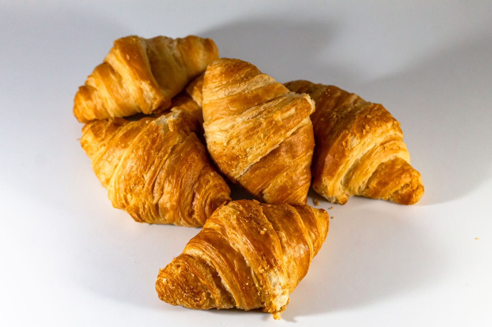

Tutto è nato da un forno piccolo, quattro ricette e un sogno grande. Le pagnotte fatte in casa per gli amici sono diventate il Forno Rosmarì, dove la passione per il gusto incontra il calore del quartiere. Ogni infornata ha ancora lo stesso cuore.
Da casa nostra al forno